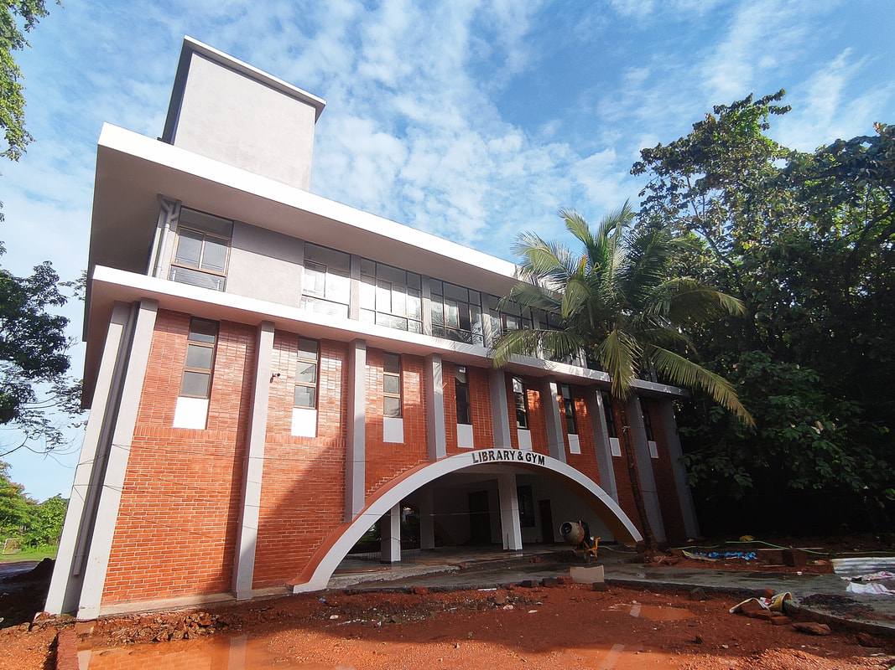
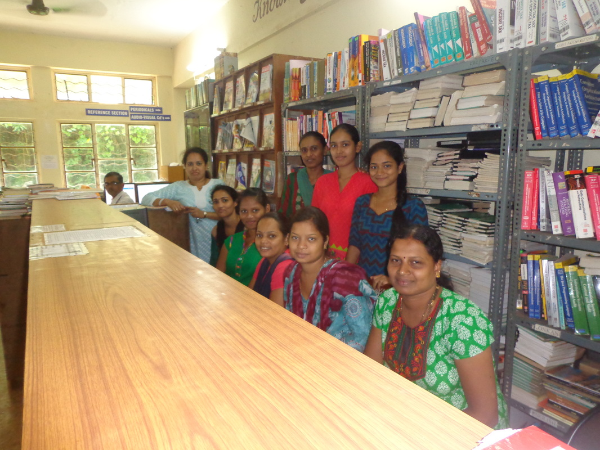
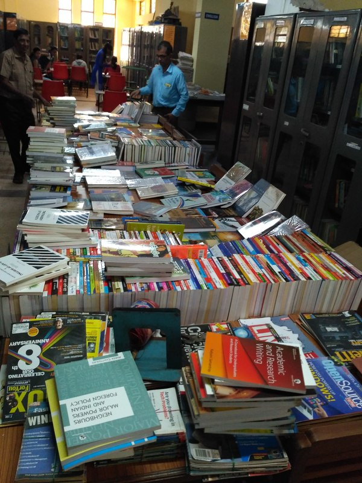
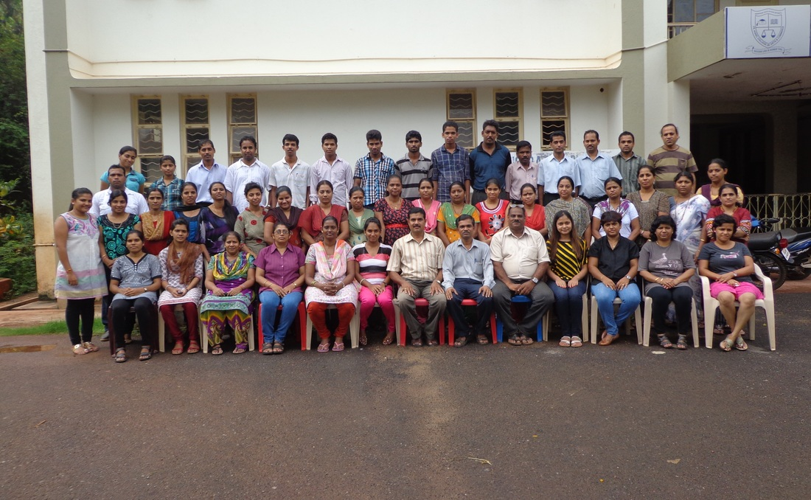
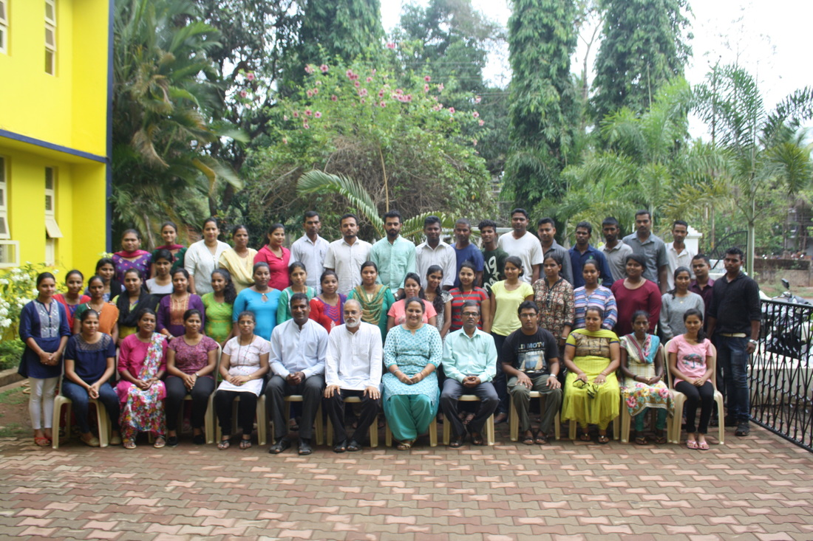
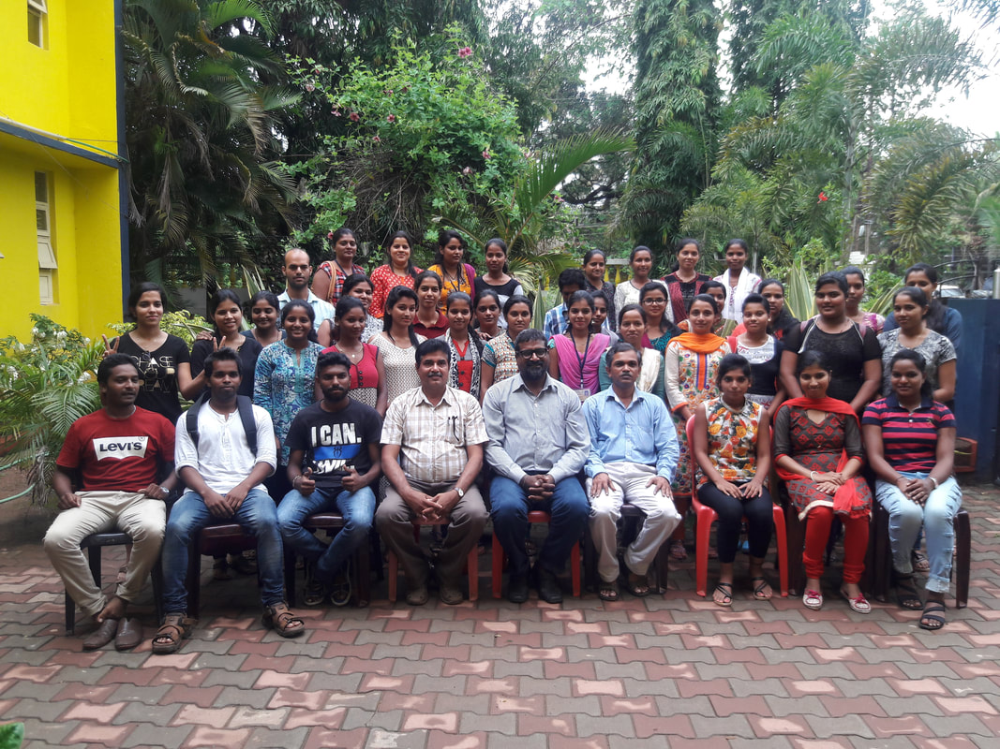
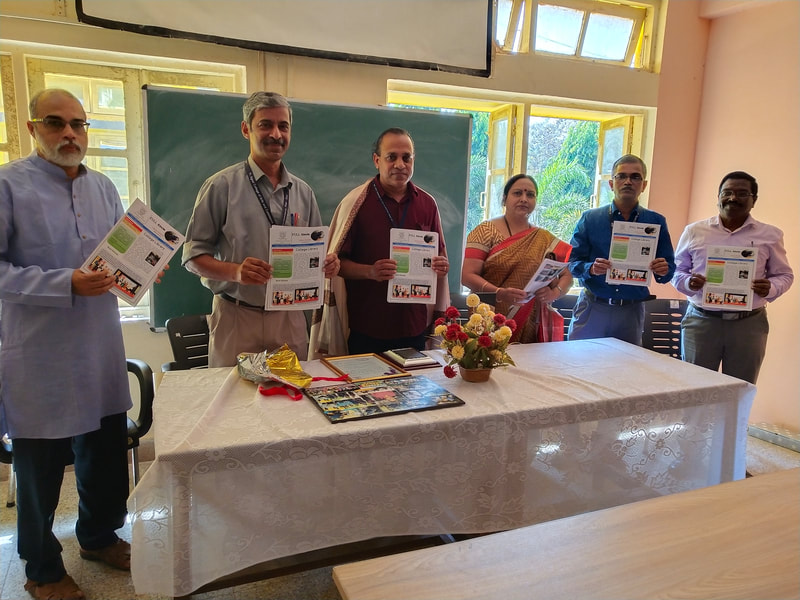
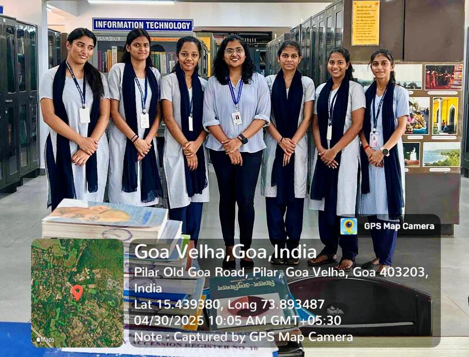
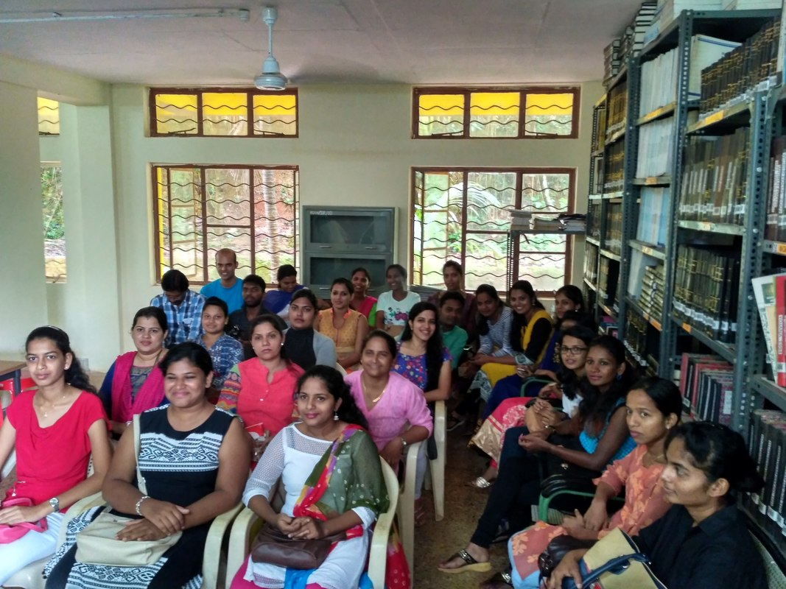

Pilar, Goa
Fr. Agnel College Library
A clean rebuild of the original library website with all discovered subpages, local image assets, syllabus links, question papers, reports, presentations, projects and archive resources.
Main branches
Everything from the original menu, rebuilt simply.
Warm, welcoming accessible gateway to globally linked knowledge and information sources and focal point for technology based learning.
AboutAbout LibraryProfile of Fr. Agnel College Library, its holdings, digital resources, best practices and training role.
AboutLibrary StaffLibrary staff directory.
AboutCollege LibrarianCollege Librarian page preserved from the original site.
AboutLibrary CommitteeLibrary Advisory Committee details and objectives.
AboutLibrary ActivitiesCertificate Course, short-term library science course, Knowledge Bazar and Full Circle.
AboutFAQFrequently asked questions for membership, cards, renewals and circulation.
GalleryPhoto GalleryGallery of library events, awards, Knowledge Bazaar and library activity photographs.
GalleryCertificate Course StudentsPhotographs and records of certificate course students.
GalleryKnowledge BazarKnowledge Bazaar photographs and event material.
RepositoryInstitutional RepositoryGateway for syllabus, bulletins, question papers, projects, presentations, lesson plans and notes.
RepositorySyllabusCBCS and NEP syllabus files from the original syllabus page.
RepositoryOld SyllabusOld syllabus file retained from the original subpage.
RepositoryLibrary BulletinFull Circle and library bulletin material from the original site.
RepositoryQuestion PapersOld question papers and question-paper branch links from the original site.
RepositoryNEP Sample Paper for FY BA, BCom, BCANEP question paper pattern files.
Question PapersFYBAFYBA question papers from 2015 to 2025.
Question PapersF.Y.B.ComFYBCom question papers from 2015 to 2025.
Question PapersFYBCAFYBCA question papers from 2020 to 2025.
Question PapersSYBCOMSYBCom semester question papers.
Question PapersSYBASYBA semester question papers.
Question PapersSYBCASYBCA semester question papers.
Question PapersTYBCOMTYBCom semester question papers.
Question PapersTYBATYBA question papers branch.
Question PapersTYBCATYBCA question papers branch.
Question PapersBacklog PapersBacklog question papers branch.
RepositoryISA PapersISA papers from the original site.
ProjectsThird Year ProjectsThird year project gateway.
ProjectsT.Y.BCom ProjectTYBCom project files and lists.
ProjectsTYBA ProjectsTYBA project files and lists.
ProjectsT.Y.BCA ProjectsTYBCA project files and lists.
RepositoryPower Point PresentationsPowerPoint presentations and related documents.
RepositoryLesson PlansLesson plan documents.
HoldingsLibrary HoldingsLibrary holdings and facilities.
HoldingsDocumentation WorksLocal history and culture documentation works.
HoldingsList of Braille BooksBraille book collection branch.
HoldingsBraille KeyboardBraille keyboard accessibility support.
HoldingsBraille MapsBraille maps collection.
HoldingsBraille Screen Reader SoftwareNV Access screen reader support.
HoldingsList of Photographs UploadsPhotograph upload branch.
ReportsLibrary ReportAnnual library report files.
PortalKnowledge PortalKnowledge portal and database links.
PortalOPACWEB OPAC access.
PortalINFLIBNET N-LISTN-LIST digital resource access.
PortalSubject PortalSubject portal links from the original website.
PortalImportant LinksImportant academic and library links.
ContactContactContact details for the college library.
RepositoryPower Point Presentations 1Second PowerPoint presentation branch preserved from the old menu.
GalleryBook ExhibitionsBook exhibition branch.
ServicesLibrary of ThingsLibrary of Things page.
AboutOther ActivitiesLibrarians Day and other library activities.
PortalWashington PostDigital Washington Post access information.
RepositoryHindi SYBA PoemsHindi poem resource.
RepositoryKonkani Vinodi NibandKonkani Vinodi Niband resource.
RepositoryGU-ART SyllabusGoa University arts syllabus branch.
Local assets
Uploaded library photographs are included locally.










